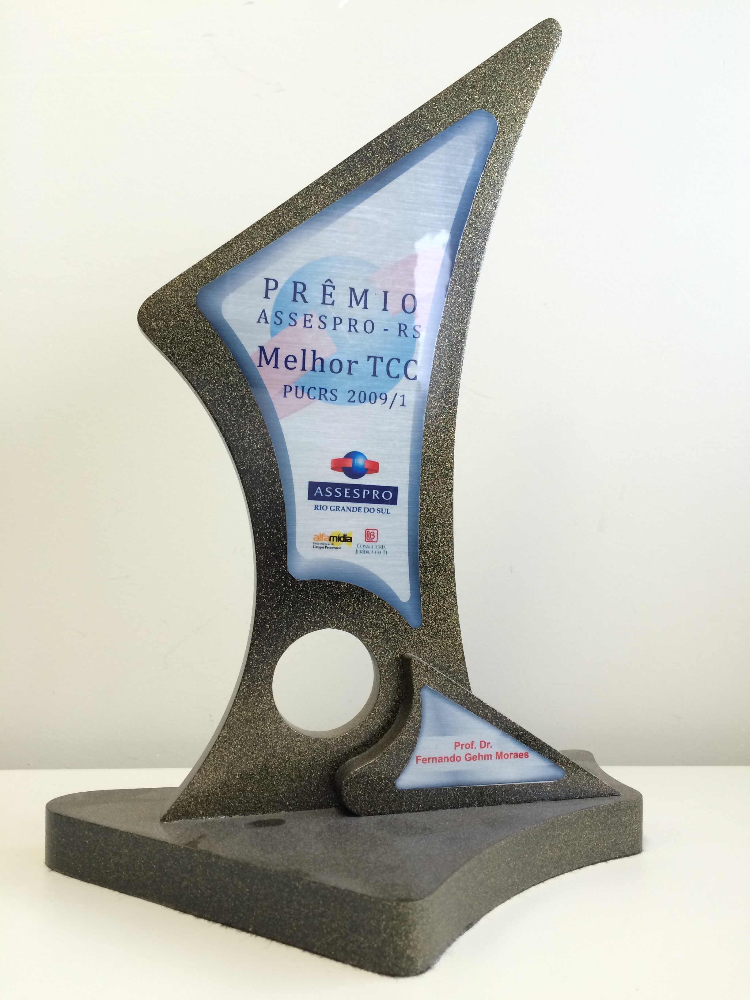
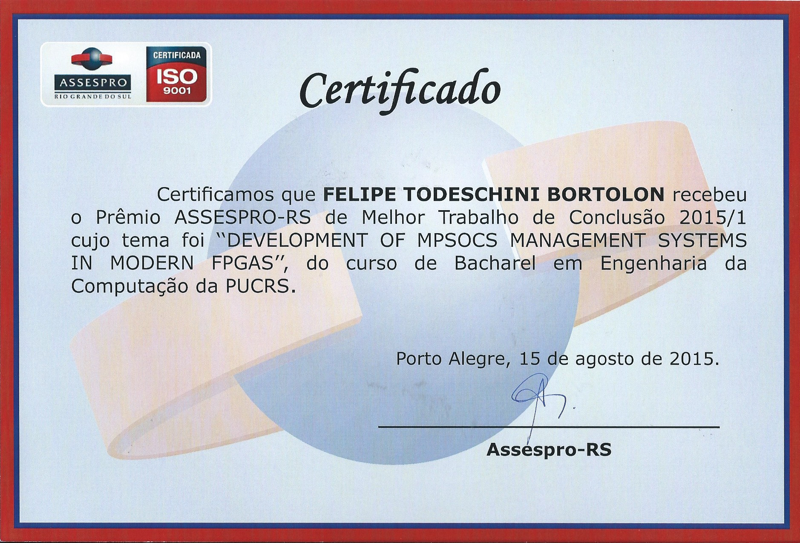
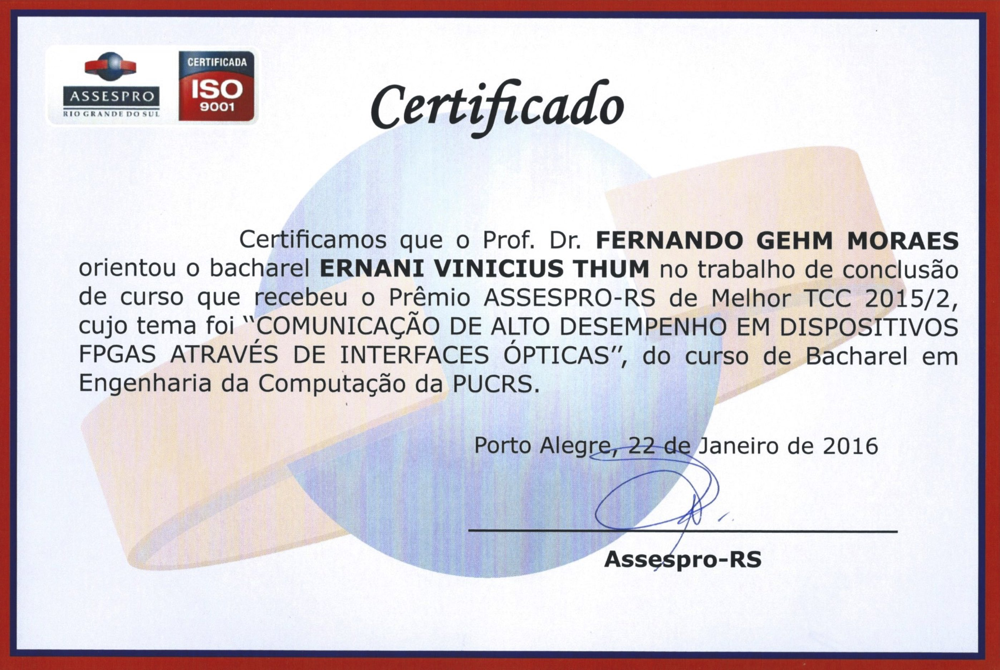
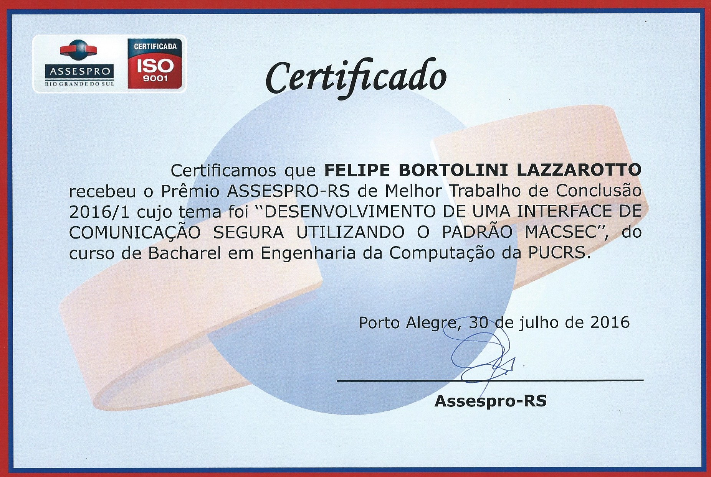
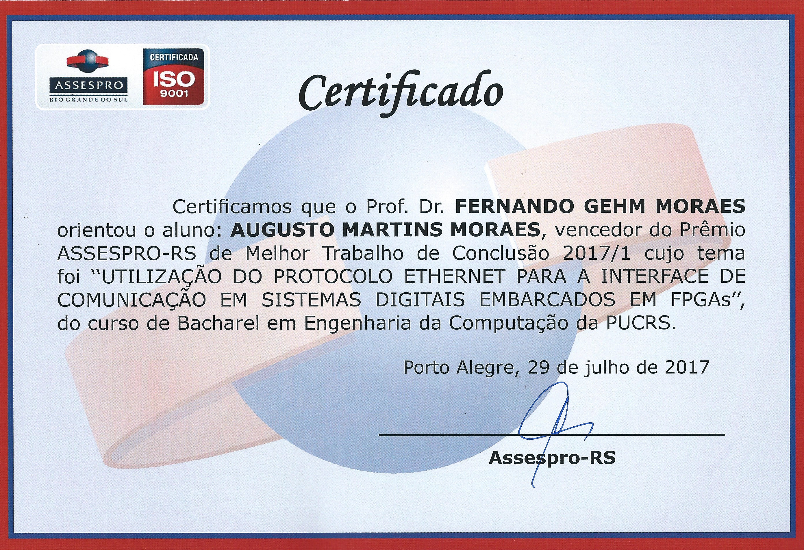

|  |  |  |  |  |
| 2009 | 2015 | 2015 | 2016 | 2017 |
| 36 |
Ambiente para Exploração de CNNs em nível RTL
Társio Onofrio Cardoso da Silva Engenharia de Computação - PUCRS, 26/Junho/2023 |
|
|---|---|---|
| 35 |
Proposal of a Secure Network Interface for Protecting IO Communication in Many-cores
Gustavo Comarú Rodrigues Engenharia de Computação - PUCRS, 01/Dezembro/2022 |
|
| 34 |
Ambiente Seguro para Troca de Informações entre Processadores em Sistemas Embarcados Baseados na Arquitetura ARM
Rafael Schild Reusch Engenharia de Computação - PUCRS, 03/Dezembro/2020 |
|
| 33 |
Interfaces de Rede Padronizadas para Periféricos em Sistemas Many-core
Daniel Correa Munhoz Engenharia de Computação - PUCRS, 07/Julho/2020 |
|
| 32 |
Projeto de Rede Intrachip Utilizando Roteador Roundabout
Henrique Martins Medina Engenharia de Computação - PUCRS, 06/Dezembro/2019 |
|
| 31 |
Pesquisa e Desenvolvimento de Mecanismo de Comunicação Segura Entre Processadores Utilizando Tecnologia Trustzone
Hélio Souza Fuques Filho Engenharia de Computação - PUCRS, 05/Dezembro/2019 |
|
| 30 |
Módulos de Hardware para Transmissão e Recepção de Quadros Ethernet a 40 Gbps
Tanauan Cardoso da Cunha Engenharia Elétrica - PUCRS, Julho 2019 |
|
| 29 |
A Convolutional Neural Network FPGA Implementation Proposal
Guilherme dos Santos Korol Engenharia de Computação - PUCRS, Dezembro 2018 |
|
| 28 |
Desenvolvimento de um módulo de criptografia leve para FPGA utilizando o algoritmo Simon and Speck
Cristovam Lage da Silva Engenharia de Computação - PUCRS, Dezembro 2018 |
|
| 27 |
Integração de um Módulo de Compressão de Dados em um SoC Zynq-7000
Tadeu Marchese Engenharia de Computação - PUCRS, novembro 2017 |
|
| 26 |
Utilização do Protocolo Ethernet para a Interface de Comunicação em Sistemas Digitais Embarcados em FPGAs
Augusto Martins Moraes Engenharia de Computação - PUCRS, junho 2017 |
|
| 25 |
Desenvolvimento de Uma Interface de Comunicação Segura Utilizando o Padrão MACsec
Felipe Bortolini Lazzarotto Engenharia de Computação - PUCRS, 2016 |
|
| 24 | Desenvolvimento de Interface PCIe para Comunicação com MPSoCs em FPGAs
Augusto Gosmann Erichsen e Thiago Mânica Monteiro Engenharia de Computação - PUCRS, 2016 |
|
| 23 |
Comunicação de Alto Desempenho em Dispositivos FPGAs Através de Interfaces Ópticas
Ernani Vinicius Thum Engenharia de Computação - PUCRS, 2015 |
|
| 22 |
Development of MPSoCs Management Systems in Modern FPGAs
Felipe Todeschini Bortolon Engenharia de Computação - PUCRS, 2015 |
|
| 21 | Voltage Scaling Effects on NCL Cells: Analysis and Characterization
Ricardo Aquino Guazzelli Engenharia de Computação - PUCRS, 2014 |
|
| 20 | Desenvolvimento de Sistemas Embarcados utilizando Plataformas FPGA com Dispositivos ARM
Éverton Soares da Cunha Engenharia de Computação - PUCRS, 2014 |
|
| 19 | An Analysis of the Fabrication, Characterization and Application of Academically Developed Solar Cells
Marcelo Melo Linck Engenharia de Computação - PUCRS, 2014 |
|
| 18 | Effects of NoC Architectural Parameters on MPSoC Performance
Bruno Scherer Oliveira e Douglas Roberto Guarani da Silva Engenharia de Computação - PUCRS, 2013 |
|
| 17 | Contribuições ao Desenvolvimento de Sistemas Digitais com Reconfiguração Parcial Dinâmica
Sérgio Damo de Lemos; Luís Felipe Auad Guedes Engenharia de Computação - PUCRS, 2012 |
|
| 16 | Estudo e Implementação do Protocolo de Controle de Agregação de Enlaces (LACP)
Diego César Molina Ciência da Computação - PUCRS, 2011 |
|
| 15 | Comunicação entre Emuladores em FPGAs e Redes Ethernet
Adélcio Biazi; Douglas Maciel Cardoso Engenharia de Computação - PUCRS, 2011 |
|
| 14 | Desenvolvimento de um Webservice para Monitoramento Remoto de Sistemas Digitais Implementados em FPGA
Douglas Maldaner Zanchin; Matheus dos Santos Oleiro Engenharia de Computação - PUCRS, 2011 |
|
| 13 | Infraestrutura para Controle de Projetos dm FPGAs Através do Protocolo Ethernet
Jeferson Santiago da Silva Engenharia Elétrica - PUCRS, 2011 |
|
| 12 | Emulação de Sistemas Digitais Síncronos em Dispositivos FPGAs
Guilherme Machado de Castilhos, Leonardo Luigi Simões Pires Giacomet, Thomas Grechi Engenharia de Computação - PUCRS, 2010 |
|
| 11 | Desenvolvimento do Protocolo RSTP - Rapid Spanning Tree Protocol
Igor Kramer Pinotti Engenharia de Computação - PUCRS, 2009 |
|
| 10 | |
Desenvolvimento de um Ambiente de Execução de Aplicações Embarcadas para a Plataforma Multiprocessada HeMPs
Cezar Rodolfo Wedig Reinbrecht, Gerson Scartezzini, Thiago Raupp da Rosa Engenharia de Computação - PUCRS, 2009 |
| 9 | Desenvolvimento de Módulos de Hardware para Extração e Inserção de Carga Útil 10 Gigabit Ethernet em Quadros OTN
Frederico Ferlini, Jeferson Camargo de Oliveira Engenharia de Computação - PUCRS, 2008 |
|
| 8 | Implementação de uma arquitetura Reed-Solomon para uso em Redes OTN 10.7 Gbps
Alzemiro Henrique Lucas da Silva; Taciano Ares Rodolfo Engenharia de Computação - PUCRS, 2007 |
|
| 7 | Desenvolvimento de Módulos de Hardware para Recepção e Transmissão de Quadros OTNs
Roberto Germani Paiva; Samuel dos Santos Marczak Engenharia de Computação - PUCRS, 2007 |
|
| 6 | Memória Cache em uma Plataforma Multiprocessada
Antonio A. de Alecrim Jr., Rafael Fraga Garibotti Engenharia de Computação - PUCRS, 2007 |
|
| 5 | PrimeSec: Sistema de Detecção de Intrusão em Redes de Computadores sobre uma Plataforma Multiprocessada
Guilherme Montez Guindani, Hugo Artur Weber Schmitt Engenharia de Computação - PUCRS, 2006 |
|
| 4 | Uma Exploração Arquitetural de Redes Intra-chip com Topologia Malha e Modo de Chaveamento Wormhole
Everton Alceu Carara Ciência da Computação - PUCRS, 2004 |
|
| 3 | Arquitetura Multiprocessada em SoCs:Estudo de Diferentes Topologias de Conexão
Aline Vieira de Mello, Leandro Heleno Möller Ciência da Computação - PUCRS, 2003 |
|
| 2 | Compilador Configurável para Processadores Embarcados
Adriano Soli Rodrigues da Roza, Carlos Eduardo Dutra Brum, Leonardo Santos da Silva Ciência da Computação - PUCRS, 2001 |
|
| 1 | Sistema Integrado e Multiplataforma para Controle Remoto de Residências
Alexandre Amory, Juracy Petrini Júnior Ciência da Computação - PUCRS, 2000 |
|
{kind=link}
{kind=link}
{kind=link}
{kind=link}
{kind=link}